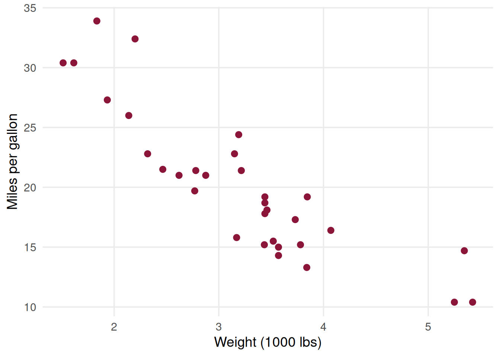

Simple Linear Regression — Exercises
Hands-on practice with pre-loaded R data
Try it online
No installation needed
Scan the QR code or open the link below to try Jupyter in your browser.
Simple Linear Regression
Learning goals
- Fit a simple linear regression model in R.
- Interpret the slope and intercept in context.
- Use residual plots to check whether the model is reasonable.
- Make predictions with
predict(). - Practice reading
summary(lm()).
Dataset
Pre-loaded R data
We will use a pre-loaded dataset in R.
For this class, we will use mtcars, because it is already available in base R and has numeric variables that work well for regression.
data(mtcars)Inspecting: Observe
head(mtcars) mpg cyl disp hp drat wt qsec vs am gear carb
Mazda RX4 21.0 6 160 110 3.90 2.620 16.46 0 1 4 4
Mazda RX4 Wag 21.0 6 160 110 3.90 2.875 17.02 0 1 4 4
Datsun 710 22.8 4 108 93 3.85 2.320 18.61 1 1 4 1
Hornet 4 Drive 21.4 6 258 110 3.08 3.215 19.44 1 0 3 1
Hornet Sportabout 18.7 8 360 175 3.15 3.440 17.02 0 0 3 2
Valiant 18.1 6 225 105 2.76 3.460 20.22 1 0 3 1Summary Statistics
summary(mtcars) mpg cyl disp hp
Min. :10.40 Min. :4.000 Min. : 71.1 Min. : 52.0
1st Qu.:15.43 1st Qu.:4.000 1st Qu.:120.8 1st Qu.: 96.5
Median :19.20 Median :6.000 Median :196.3 Median :123.0
Mean :20.09 Mean :6.188 Mean :230.7 Mean :146.7
3rd Qu.:22.80 3rd Qu.:8.000 3rd Qu.:326.0 3rd Qu.:180.0
Max. :33.90 Max. :8.000 Max. :472.0 Max. :335.0
drat wt qsec vs
Min. :2.760 Min. :1.513 Min. :14.50 Min. :0.0000
1st Qu.:3.080 1st Qu.:2.581 1st Qu.:16.89 1st Qu.:0.0000
Median :3.695 Median :3.325 Median :17.71 Median :0.0000
Mean :3.597 Mean :3.217 Mean :17.85 Mean :0.4375
3rd Qu.:3.920 3rd Qu.:3.610 3rd Qu.:18.90 3rd Qu.:1.0000
Max. :4.930 Max. :5.424 Max. :22.90 Max. :1.0000
am gear carb
Min. :0.0000 Min. :3.000 Min. :1.000
1st Qu.:0.0000 1st Qu.:3.000 1st Qu.:2.000
Median :0.0000 Median :4.000 Median :2.000
Mean :0.4062 Mean :3.688 Mean :2.812
3rd Qu.:1.0000 3rd Qu.:4.000 3rd Qu.:4.000
Max. :1.0000 Max. :5.000 Max. :8.000 Variables to use
Question: how does car weight relate to fuel efficiency?
We will study:
mpgas the response variable (Y).wtas the explanatory variable (X).
Plot
Code
ggplot(mtcars, aes(x = wt, y = mpg)) +
geom_point(color = iscal_burgundy, size = 2.5) +
theme_minimal(base_size = 14) +
theme(panel.grid.minor = element_blank()) +
labs(x = "Weight (1000 lbs)", y = "Miles per gallon")
Exercise 1
First look at the data
- Create a scatter plot of
mpgagainstwt. - Describe the direction of the relationship.
- Is it roughly linear?
- Are there any unusual observations?
Hint
plot(mtcars$wt, mtcars$mpg)Exercise 2
Fit the model
Fit a simple linear regression model using lm().
Task
- Estimate the model: [ mpg_i = _0 + _1 wt_i + _i ]
- Display the regression summary.
Hint
model <- lm(mpg ~ wt, data = mtcars)
summary(model)Exercise 3
Interpret the coefficients
Answer the following:
- What does the slope mean in this context?
- What does the intercept mean?
- Is the intercept meaningful here?
Hint
coef(model)Exercise 4
Compare fitted and observed values
- Extract the fitted values.
- Extract the residuals.
- Check whether residuals sum to approximately zero.
Hint
fitted(model)
resid(model)
sum(resid(model))Exercise 5
Diagnostic plots
- Plot residuals against fitted values.
- Create a normal Q-Q plot of residuals.
- Decide whether the homoscedasticity and normality assumptions look reasonable.
Hint
par(mfrow = c(2, 2))
plot(model)
par(mfrow = c(1, 1))Exercise 6
Prediction
Predict fuel efficiency for a car weighing 3.0 and 4.0 units.
Task
- Create a new data frame.
- Use
predict()to obtain predicted values. - Try both confidence intervals and prediction intervals.
Hint
newcars <- data.frame(wt = c(3.0, 4.0))
predict(model, newcars, interval = "confidence")
predict(model, newcars, interval = "prediction")Cheat sheet
Core commands
# load data
data(mtcars)
# plot
plot(mtcars$wt, mtcars$mpg)
# fit model
model <- lm(mpg ~ wt, data = mtcars)
# regression output
summary(model)
# coefficients
coef(model)
# fitted values
fitted(model)
# residuals
resid(model)
# predictions
newcars <- data.frame(wt = c(3.0, 4.0))
predict(model, newcars)
predict(model, newcars, interval = "confidence")
predict(model, newcars, interval = "prediction")Useful checks
# residual plot
plot(fitted(model), resid(model))
abline(h = 0, lty = 2)
# normality check
qqnorm(resid(model))
qqline(resid(model))
# diagnostics
par(mfrow = c(2, 2))
plot(model)
par(mfrow = c(1, 1))Homework (not graded)
Explore the dataset, and find a suitable alternative regression to predict mpg. Compare both results, and we will discuss next lecture. You do not need to prepare slides or anything like that, it can be printed, or you can send it by email.